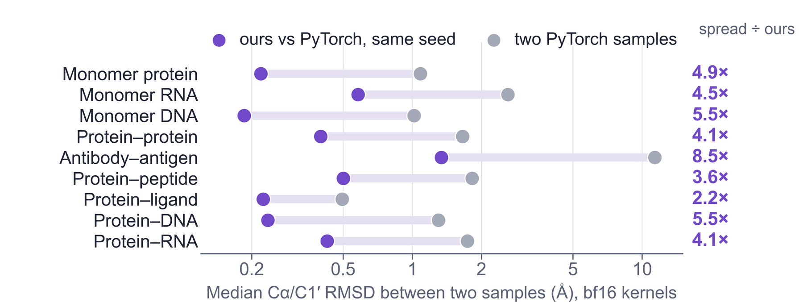
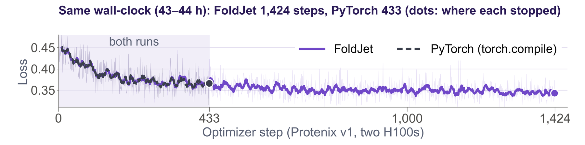
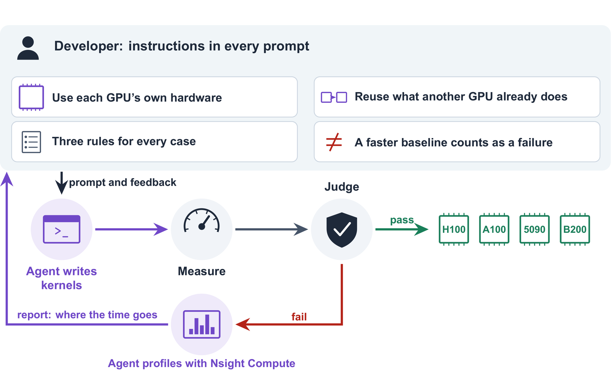
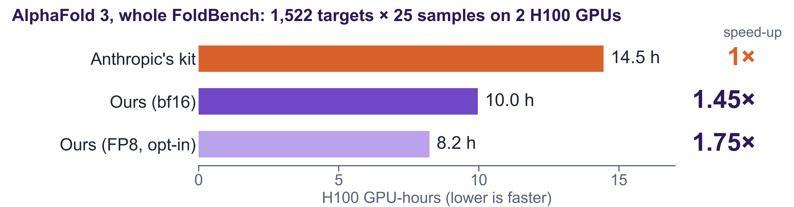
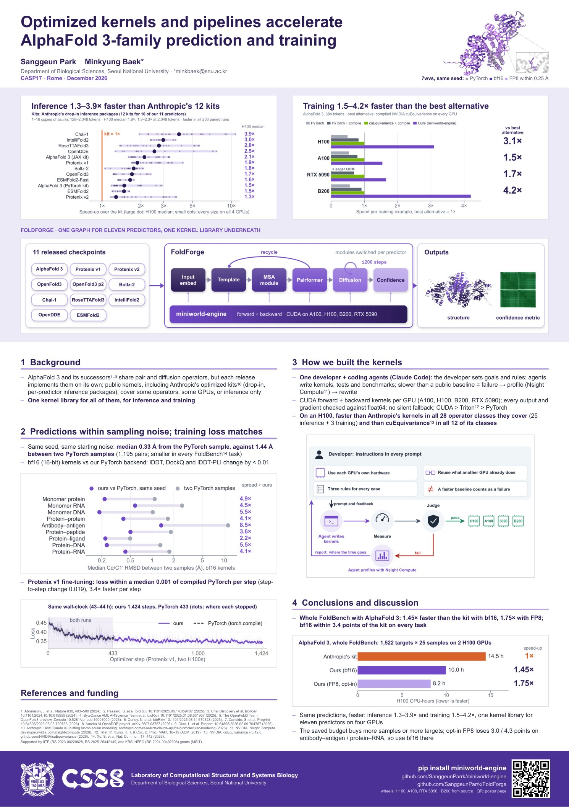

1Background
- AlphaFold 3 and its successors1–9 share pair and diffusion operators, but each release implements them on its own. Public kernels, including Anthropic's optimized kits10 (drop-in, per-predictor inference packages), cover some operators, some GPUs, or inference only.
- One kernel library for all of them, for inference and training.
2Predictions within sampling noise; training loss matches
- Same seed, same starting noise: median 0.33 Å from the PyTorch sample, against 1.44 Å between two PyTorch samples (1,195 pairs; smaller in every FoldBench14 task).
- bf16 (16-bit) kernels vs our PyTorch backend: lDDT, DockQ and lDDT-PLI change by < 0.01.

- Protenix v1 fine-tuning: loss within a median 0.001 of compiled PyTorch per step (step-to-step change 0.019), 3.4× faster per step.

3How we built the kernels
- One developer + coding agents (Claude Code): the developer sets goals and rules; agents write kernels, tests and benchmarks; slower than a public baseline = failure → profile (Nsight Compute11) → rewrite.
- CUDA forward + backward kernels per GPU (A100, H100, B200, RTX 5090); every output and gradient checked against float64; no silent fallback; CUDA > Triton12 > PyTorch.
- On an H100, faster than Anthropic's kernels in all 28 operator classes they cover (25 inference + 3 training) and than cuEquivariance13 in all 12 of its classes.

4Conclusions and discussion
- Whole FoldBench with AlphaFold 3: 1.45× faster than the kit with bf16, 1.75× with FP8; bf16 within 3.4 points of the kit on every task.

- Same predictions, faster: inference 1.3–3.9× and training 1.5–4.2×, one kernel library for eleven predictors on four GPUs.
- The saved budget buys more samples or more targets; opt-in FP8 loses 3.0 / 4.3 points on antibody–antigen / protein–RNA, so use bf16 there.
Full poster

A0 portrait, PDF (8 MB).
References
- Abramson, J. et al. Accurate structure prediction of biomolecular interactions with AlphaFold 3. Nature 630, 493–500 (2024). doi
- Passaro, S. et al. Boltz-2. bioRxiv (2025). doi
- Chai Discovery et al. Chai-1. bioRxiv (2024). doi
- ByteDance AML AI4Science Team et al. Protenix. bioRxiv (2025). doi
- The OpenFold3 Team. OpenFold3-preview. Zenodo (2026). doi
- Corley, N. et al. RoseTTAFold3. bioRxiv (2025). doi
- Candido, S. et al. ESMFold2. Preprint (2026). doi
- Aureka AI OpenDDE project. arXiv 2607.03787 (2026). arXiv
- Qiao, L. et al. IntelliFold2. Preprint (2026). doi
- Anthropic. How Claude is uplifting biomolecular modeling (2026). link
- NVIDIA. Nsight Compute (2026). link
- Tillet, P., Kung, H. T. & Cox, D. Triton. Proc. MAPL 10–19 (ACM, 2019). doi
- NVIDIA. cuEquivariance v0.12.0 (2026). link
- Xu, S. et al. FoldBench. Nat. Commun. 17, 442 (2026).
Supported by IITP (RS-2023-00220628, RS-2025-25442149) and KBSI NFEC (RS-2024-00402698) grants (MSIT).